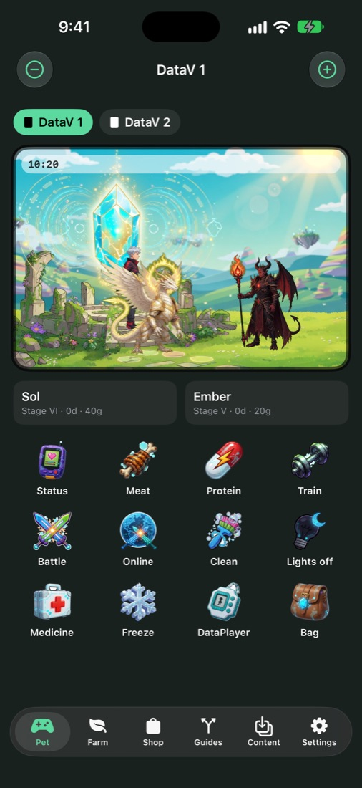

Care decides everything
Two DataVs, each with its own Pet. Feed it, train it, clean up after it and put it to bed. What you do, and what you skip, shapes the route it evolves down.
- Food and strength hearts, effort, sickness and injuries
- Training mini games that build Power
- Evo Crystals, Holy Ray and other items from the Shop